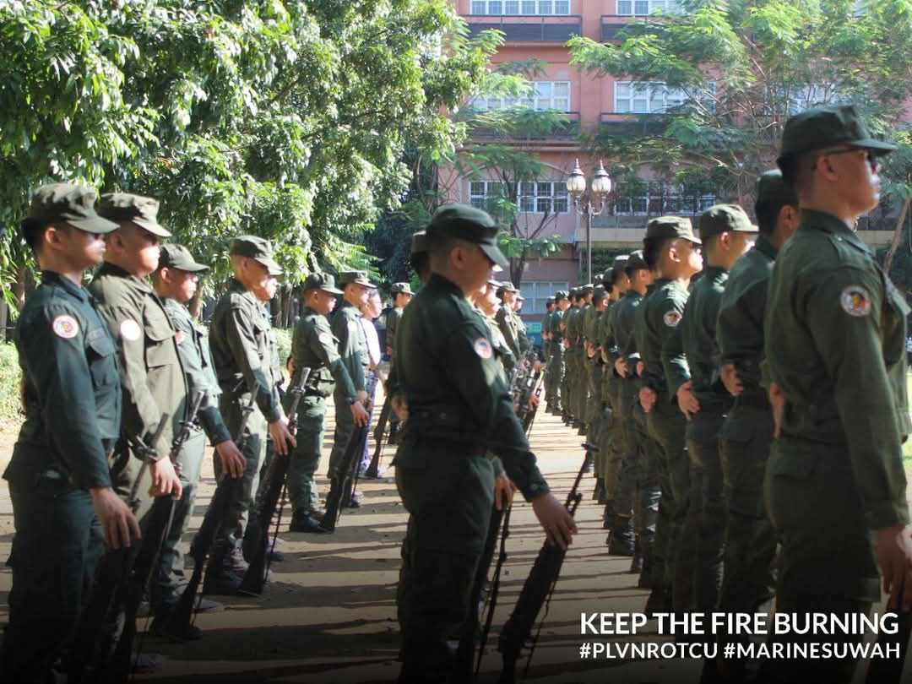

Who am I?
I'm Villa, Rex Jean Mikel. A 20 year old male living in the Philippines.
I'm a self-thought artist, and have been making art since I was little, often focusing on creating cool character designs. I have been part of many art contests in my community and have won a few times. I study how animations work and have made a few of them and is always looking for ways to improve my art in general.
I'm a programmer as well, with a good algorithm when it comes to problem solving. Though, I do prefer game programming. I am way too into games and I have a good grasp at Game Design and how games work.
And finally, I am passionate with story-telling. I read a lot of books, from YA novels like Percy Jackson, Harry Potter and whatnot to more Mature Novels like Lord of the Rings, Dune, A Song of Ice and Fire, Stormlight Archives and more. I watched a lot of movies, and take my time to try and understand its themes. I have made a few short stories in competitions and activities during my elementary to high-school days. And currently, I am playing as a dungeon master in an on going campaign with friends.
Education
College
Pamantasan ng Lungsod ng Valenzuela
Bachelor of Science in Information Technology
Senior High-school
Trinity Polytechnic College
ICT
Junior High-school
Bignay National High-school
Elementary
Touched by Messiah Christian School
Trainings
Red Cross First Aid Training
Reserved Officers Training Corps
